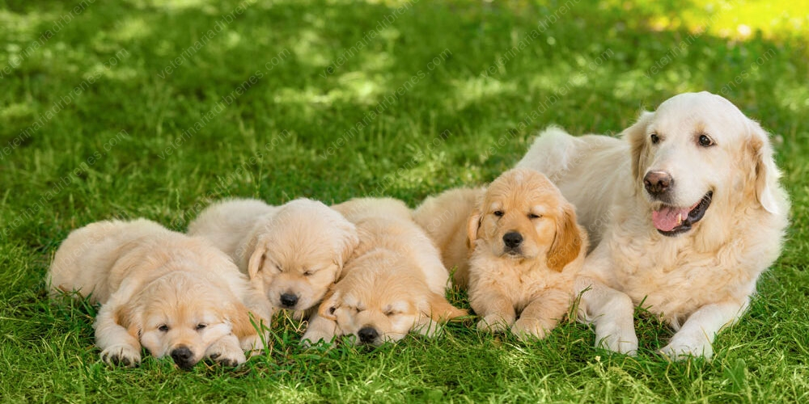

Adoptar una mascota significa darle una nueva oportunidad de vida. Muchas mascotas están esperando una familia que las cuide y las quiera.

Si deseas conocer más sobre cómo adoptar, visita: Ver opciones de adopción